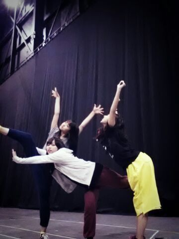
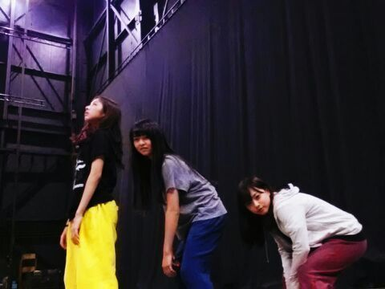

はーーーい＼(^o^)／
久しぶりやね．ろってぃ−だよん
本当ここ４日間位blog更新する時間がなかったの
ごめねぇ(´・ω・｀)
今日は 『 13日の金曜日 』!!!
すっぎょ〜い .ぎょぎょ
13日の金曜日、何かが起こりそう♪
ドキドキして大声をあげたくなる♪ ってゆーサビの歌詞ね´▽`/笑
あっ、あれだねあれ
乃木どこ見てくれてありがとう！
まひろが 渋谷で あみを三時間待ったって話ね♪
本当 面白いでしょ*^^*
まひろだから良かったけど
他の人 そんなに待たせちゃダメだぞぉ〜う
(*´ω｀*)笑
ほんでほんで ほん〜でねっ
昨日は 寧々の お誕生日 !!! いぇ〜い(/*´▽`)/
寧々は 完全に お姉ちゃんみたい 笑
あ. 同い年やけど .
寧々の 行動や考え方は 的確だと思う
寧々 むちゃむちゃ好きやねん ！
あと、顔が好き〜 笑
ねねは いつもパン屋さんに寄って仕事にくるから
ねねの誕生日は パン屋さんの美味しいパンを
プレゼントしよう(*^.^*)って思ったけどそれは辞めてぇぇ、
寧々の好きな飲み物 ジンジャーエールと
寧々とご飯行った時に プリン好き♪ゆうてたから
プリン買って 朝 寧々にプレゼントした(*^.^*)あはは
ここ最近 ずっと寧々といるんよ〜
一緒に頑張ってることがあってね、、
ろってぃ−,寧々,若月,れいか,みさの5人でねっ
いぇ〜い
そーいえば、、、
5日前位に 寧々と パスタやさんに
行く前、 セラピー犬の 募金しに行った(*^.^*)
ちょっとでも力になれたらないいな.
と寧々と話してね...

こんな風に 人って 変わっていったのかな？

笑。
今日も 色々頑張る。頑張る。頑張るるるる〜
皆も ファイトだよっ ☆
ぢゃあねん(・∀・)人(・∀・)大好きだよ